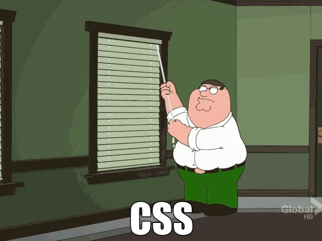
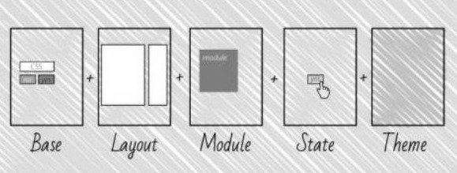

Escribir CSS es fácil,
escalarlo y mantenerlo no tanto

Para mantener organizado nuestro código necesitamos un plan
La Arquitectura CSS
¿Qué es la Arquitectura?
Según Wikipedia
Arte y técnica de diseñar, proyectar y construir edificios y espacios públicos.
Aplicando el concepto a CSS
Técnicas que nos ayudan a organizar y mantener nuestro código ordenado, óptimo y escalable.
Una buena Arquitectura CSS debe ser:
- Predecible
- Reutilizable
- Estable
- Escalable
Debemos diseñar SISTEMAS, no PÁGINAS
COMPONENTES
“It's a repeating visual pattern, that can be abstracted into an independent snippet of HTML, CSS and possibly JavaScript.”
Nicole Sullivan
Divide y vencerás
D.R.Y. - Don't Repeat Yourself
Herramientas CSS para crear sistemas
- Metodologías
- Frameworks
- Procesadores
- Guías de Estilos
Más información
Metodologías CSS
Nos permiten organizar y nombrar el código.
Frameworks CSS
Son marcos de trabajo que nos ofrecen componentes y utilidades de UI.
Procesadores CSS
Herramientas de Automatización
Guías de Estilos
Colección de elemento y reglas pre establecidas que aseguran la consistencia y coherencia de nuestro código.
¿Qué herramientas uso?
Arquitectura Minimalista
/* ********** Custom Properties ********** */
/* ********** Reset ********** */
/* ********** Components ********** */
/* ********** Utilities ********** */
/* ********** Site Styles ********** */